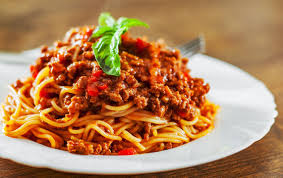

Spaghetti With Fresh Tomato Sauce

Description
Twirl your fork into this vibrant Spaghetti with Fresh Tomato Sauce, a true Italian classic! Bursting with juicy tomatoes and aromatic basil, this dish will transport your taste buds straight to the heart of Italy.
Ingredients
- 1 lb spaghetti(455 g)
- 2 tablespoons olive oil
- 3 cloves garlic, minced
- 2 cups cherry tomato(400 g)
salt, to taste
pepper, to taste
- 1 cup white wine(235 mL)
Preparation
- Cook spaghetti in boiling salted water until it’s al dente. Reserve 1 cup (235 ml) of the pasta water before draining.
- While the spaghetti is cooking, heat olive oil in a large pan (it should be large enough to toss the pasta in). Add garlic and tomatoes, and stir until well-incorporated. Season with salt and pepper.
- Cook tomatoes down for 5 minutes until they soften and release some of their juices.
- Then add the wine and allow that to reduce for 5-10 minutes until you’re left with a syrupy sauce.
- Add the pasta to your sauce, along with a splash of pasta water and toss to coat it for about 1-2 minutes so the pasta finishes cooking and absorbs the flavor of the sauce.
- Add the parmesan and basil. Add another small splash of pasta water, if needed. Toss until the cheese is melted down and you’re left with a smooth sauce.
- Gradually add small amounts of pasta water, as needed, until the sauce reaches your desired smoothness.
- Top off with extra parmesan and basil and serve immediately.